GPT7 C++ 第七讲｜继承与派生类（图解系统笔记）
本讲主线： 为什么要继承 → 派生类如何定义 → 哪些成员可访问 → 派生对象能否当基类使用 → 构造析构执行顺序 → 多重继承歧义与虚基类共享。
| 本讲知识 | 最值得掌握的具体问题 |
|---|---|
| 7.1 继承机制 | CCircle 中究竟包含哪些 CPoint 成员？ |
| 7.2 派生类定义 | public CPoint、成员对象和同名成员函数是什么关系？ |
| 7.3 访问权限 | public / protected / private 继承如何改变访问？ |
| 7.4 赋值兼容 | CPoint& = CCircle 与 CPoint = CCircle 为什么不同？ |
| 7.5 生命周期 | 基类、成员对象、派生类谁先构造、谁先析构？ |
| 7.6 多重继承 | 菱形里有几份 CAnimal？谁构造虚基类？ |
7.1 继承机制及引入理由
7.1.1 继承的意义及类别
继承（inheritance） 是一种类之间的机制：新类（派生类/子类）在已有类（基类/父类）的基础上复用其功能，并添加或修改自己的数据和行为。继承结构通常体现一种 is-a（“属于某一类”）关系，而不是“拥有某物”的 has-a 关系。
从课件角度看，它的设计动机有两条：共享公共特性与保留派生类自身差异。把所有共性都写在不同类中会造成代码重复；抽取一个基类能形成清晰的层次。继承类型分为单一继承（一个直接基类）与多重继承（多个直接基类）。
图组：继承层级、单继承与多重继承
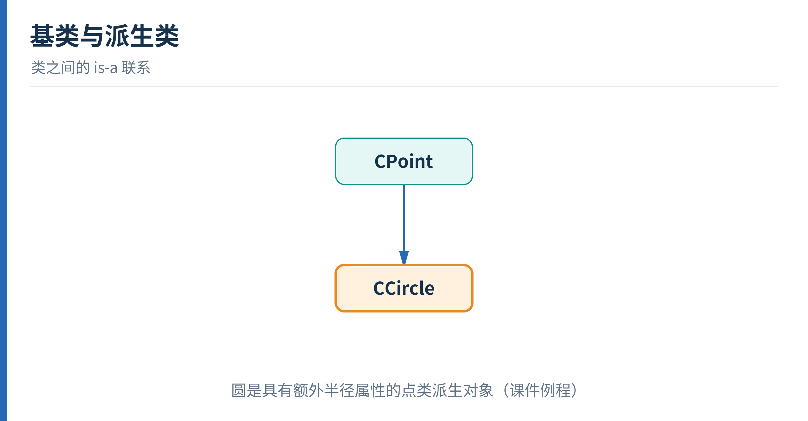
圆是具有额外半径属性的点类派生对象（课件例程）
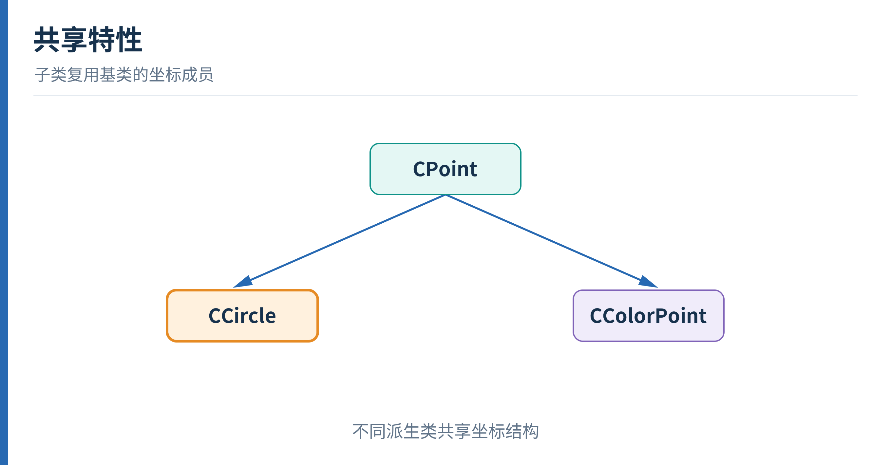
不同派生类共享坐标结构
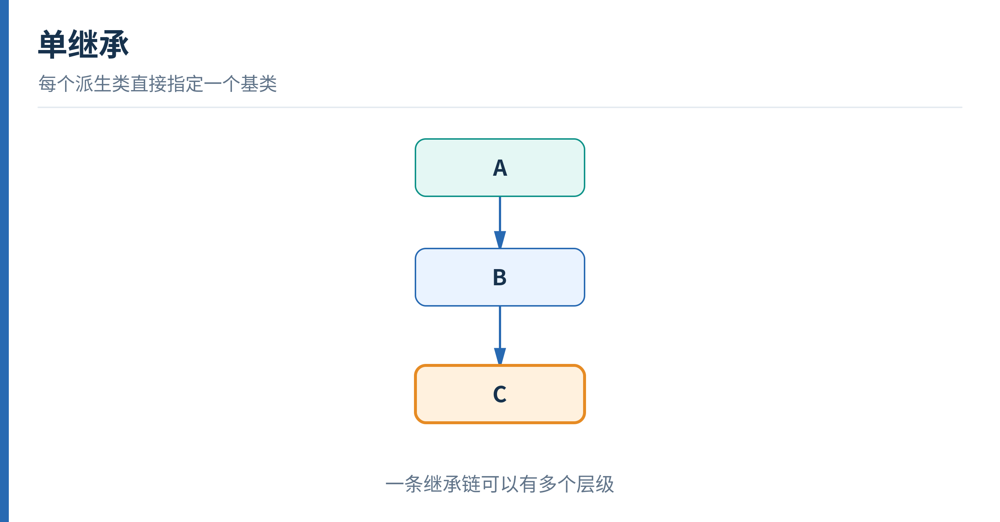
一条继承链可以有多个层级
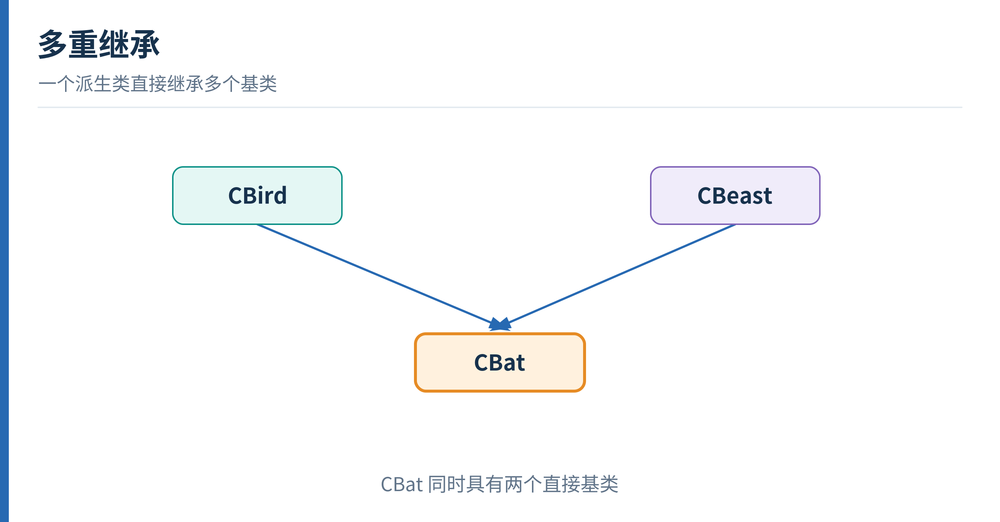
CBat 同时具有两个直接基类
7.1.2 点类、圆类与派生对象的组成
课件使用 CPoint 保存二维坐标，CCircle 公有继承 CPoint 并增加半径 mR。CCircle 对象内部有一个 CPoint 基类子对象；继承不意味着派生类重新“声明了一遍”基类成员。
CPoint：mX、mY，构造函数、析构函数、Show()。CCircle：通过基类子对象保存圆心坐标，新增mR，可定义自己的Show()。- 从
CCircle访问mX、mY的前提是它们是protected（或公开成员），若它们是private，派生类不能直接读写。
图组：同一个圆对象从基类与派生类视角观察
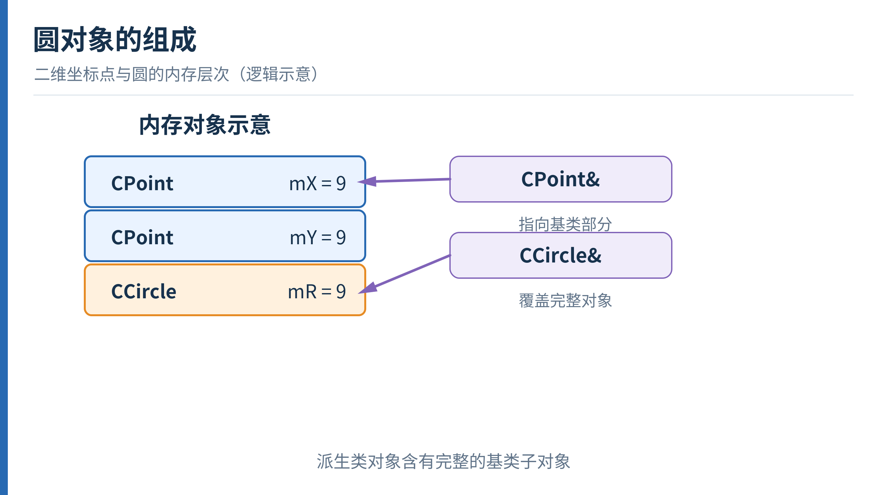
派生类对象含有完整的基类子对象
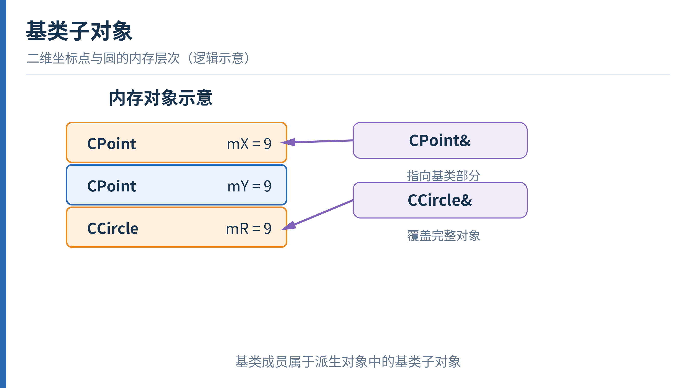
基类成员属于派生对象中的基类子对象
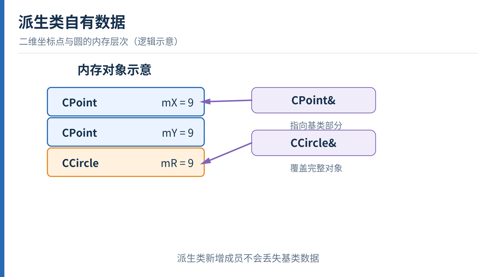
派生类新增成员不会丢失基类数据
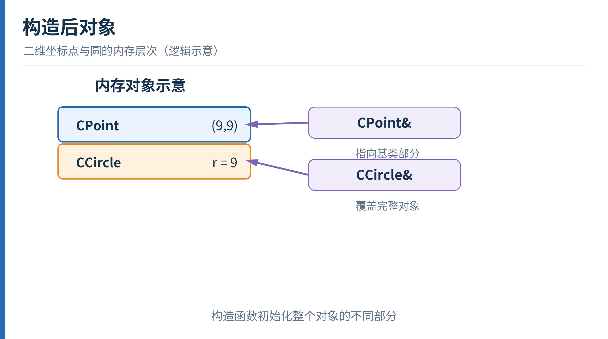
构造函数初始化整个对象的不同部分
7.1.3 成员函数隐藏与显式调用
若两个类都声明了 void Show() const，CCircle 中这个同名声明会隐藏基类的同名成员；可显式写 zCircle.CPoint::Show() 调用基类版本。隐藏（name hiding） 是名称查找规则，而重写（override） 必须讨论虚函数，本讲 Show() 不是 virtual。
在课件的 main 调用顺序中：zPoint.Show() 调用 CPoint::Show()；zCircle.Show() 调用 CCircle::Show()；zCircle.CPoint::Show() 调用基类版本。
图组：同名 Show 的静态查找与显式限定
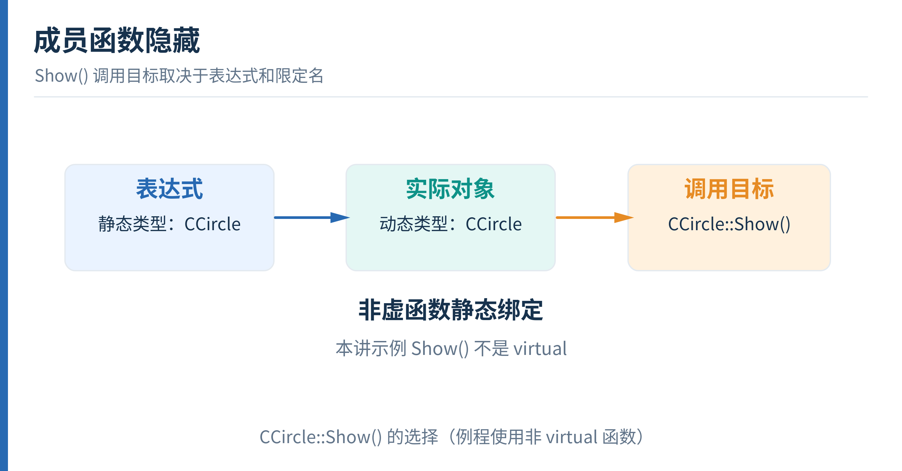
CCircle::Show() 的选择（例程使用非 virtual 函数）
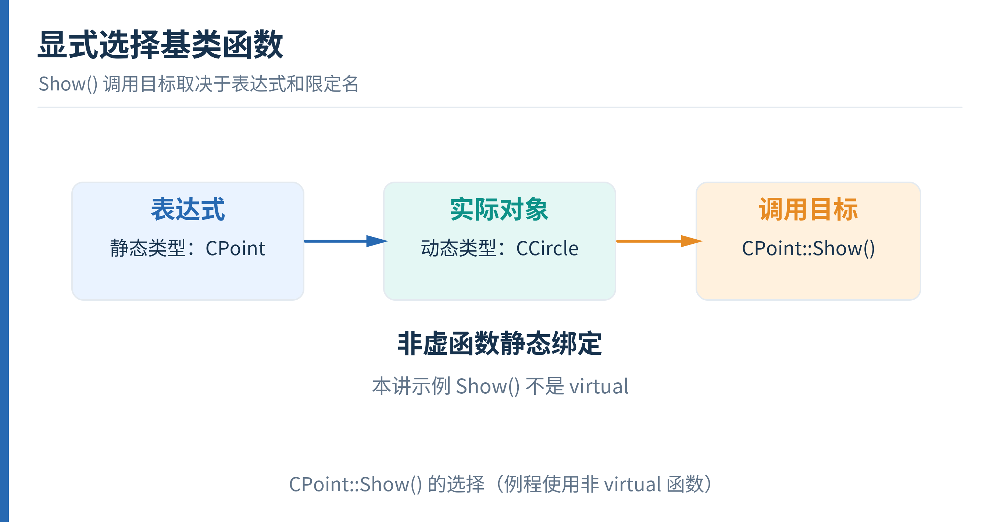
CPoint::Show() 的选择（例程使用非 virtual 函数）
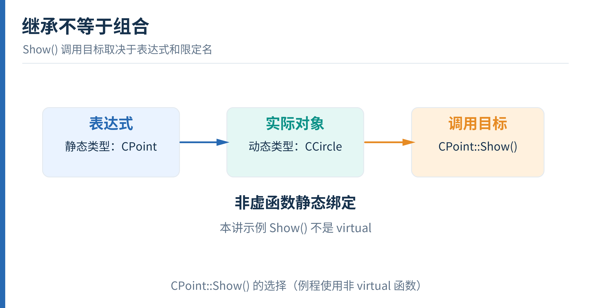
CPoint::Show() 的选择（例程使用非 virtual 函数）
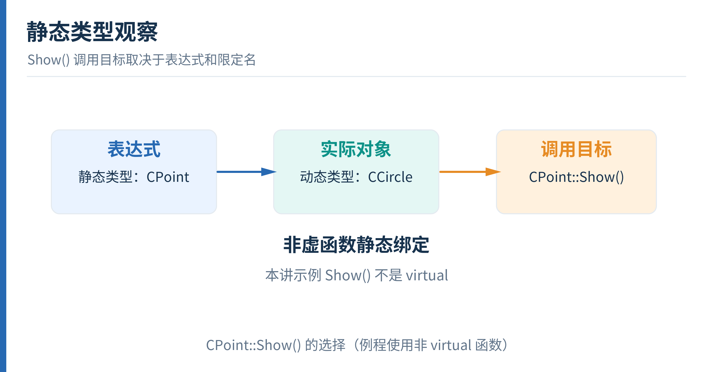
CPoint::Show() 的选择（例程使用非 virtual 函数）
7.2 继承实现机制：派生类定义
7.2.1 派生类语法与基类列表
C++ 用冒号后的基类说明列表定义继承。基本格式：
class Derived : public Base { // 公有继承 Base
public:
Derived(int x); // 声明派生类构造函数
};
语法中的 public 属于继承方式，不是后面类体内的 public: 成员访问区段。 C++ 的 class 默认继承方式是 private，struct 默认是 public，最好显式写出避免误解。
在一个类中也可以指定两个直接基类：
class CBat : public CBird, public CBeast { // 按先 Bird 后 Beast 的次序声明
public:
CBat(); // 声明构造函数
};
这里 CBat 的直接非虚基类构造按 CBird、CBeast 的声明顺序进行；与构造函数初始化列表中的书写先后无关。
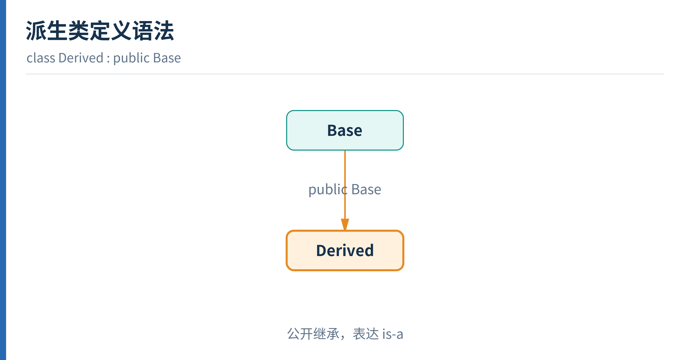
公开继承，表达 is-a
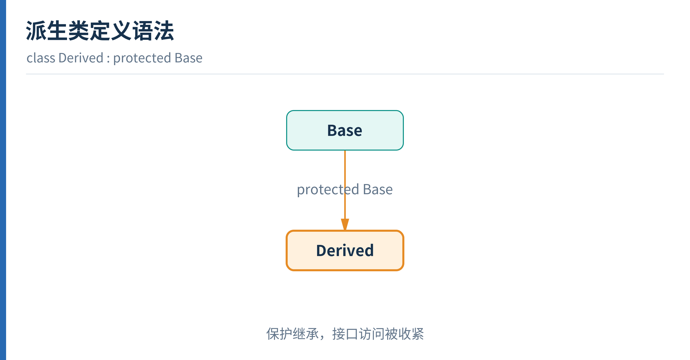
保护继承，接口访问被收紧
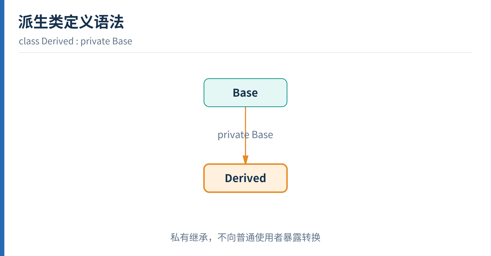
私有继承，不向普通使用者暴露转换
图组：拆解继承声明与初始化列表语法
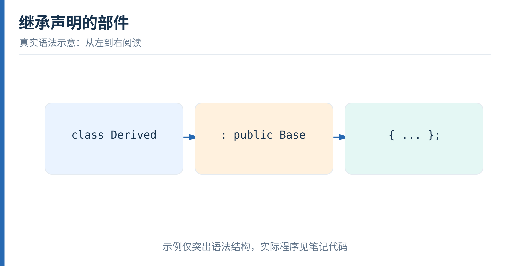
示例仅突出语法结构，实际程序见笔记代码
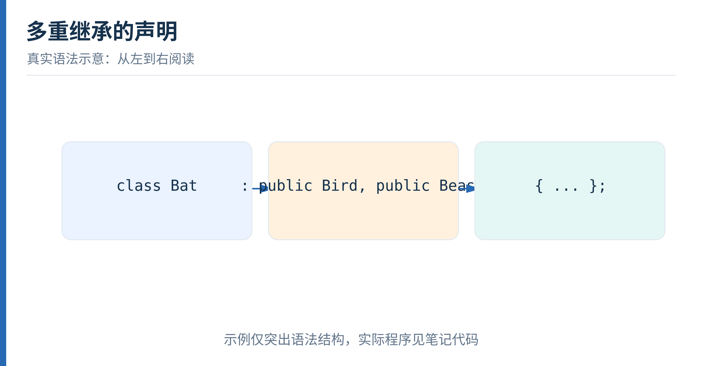
示例仅突出语法结构，实际程序见笔记代码
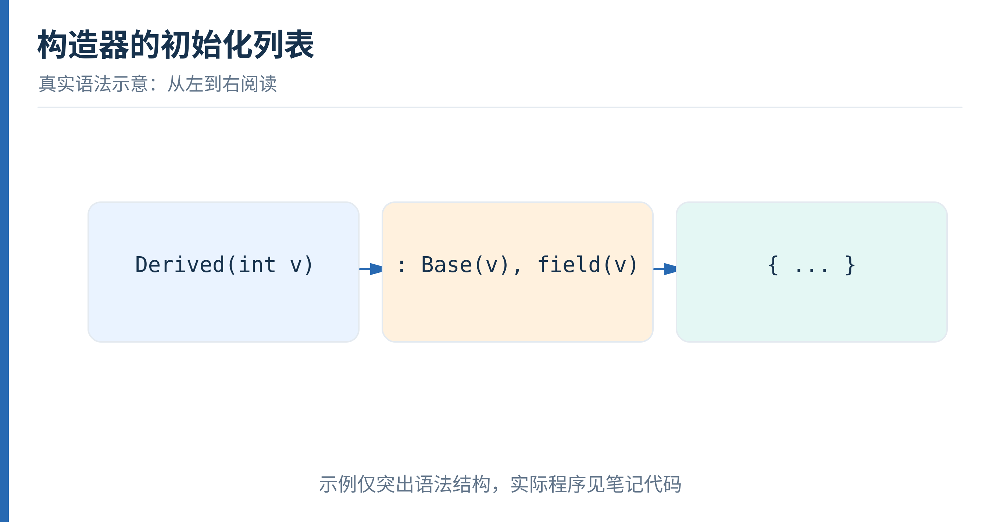
示例仅突出语法结构，实际程序见笔记代码
7.2.2 完整的单继承例程（现代标准写法）
下面保留课件中“点—圆”的类名与行为，但把 void main() 修正为标准的 int main()，并使用成员初始化列表。可以直接在 C++17 环境编译执行。
Point.h
#ifndef CPOINT_H
#define CPOINT_H
#include <iostream> // 使用 std::cout
class CPoint {
protected:
int mX, mY; // 派生类可以访问的坐标
public:
CPoint(int x = 0, int y = 0); // 声明有默认参数的构造函数
void Show() const; // 不改变对象的成员函数
~CPoint(); // 基类析构函数，课件示例为非虚
};
#endif
Point.cpp
#include "Point.h" // 引入 CPoint 声明
CPoint::CPoint(int x, int y) : mX(x), mY(y) { // 初始化坐标
std::cout << "Point...\n"; // 输出构造提示
}
void CPoint::Show() const {
std::cout << "X = " << mX << ", Y = " << mY << '\n'; // 输出坐标
}
CPoint::~CPoint() {
std::cout << "Delete Point!\n"; // 输出析构提示
}
Circle.h
#ifndef CCIRCLE_H
#define CCIRCLE_H
#include "Point.h" // 定义基类时必须可见完整类型
class CCircle : public CPoint { // CCircle 公有继承 CPoint
int mR; // 新增半径
public:
CCircle(int x, int y, int r); // 声明派生类构造函数
void Show() const; // 隐藏基类同名 Show
~CCircle(); // 声明析构函数
};
#endif
Circle.cpp
#include "Circle.h" // 获得派生类声明
CCircle::CCircle(int x, int y, int r)
: CPoint(x, y), mR(r) { // 先初始化基类，再初始化半径
std::cout << "Circle...\n"; // 输出构造提示
}
void CCircle::Show() const {
std::cout << "圆心为点(" << mX << ", " << mY << ")\n"; // 访问保护坐标
std::cout << "半径为 " << mR << '\n'; // 输出新增数据
}
CCircle::~CCircle() {
std::cout << "Delete Circle!\n"; // 先输出本类析构提示
}
main.cpp
#include "Circle.h" // 包含完整的派生类声明
int main() {
CPoint point(7, 1); // 创建基类对象
CCircle circle(9, 9, 9); // 创建派生类对象，先构造基类
point.Show(); // 调用基类 Show
circle.Show(); // 调用派生类 Show
circle.CPoint::Show(); // 显式调用基类 Show
return 0; // 标准 main 函数返回值
}
编译方式： g++ -std=c++17 Point.cpp Circle.cpp main.cpp -o demo && ./demo。
输出：
Point...
Point...
Circle...
X = 7, Y = 1
圆心为点(9, 9)
半径为 9
X = 9, Y = 9
Delete Circle!
Delete Point!
Delete Point!
构造和析构的关键机制将在 7.5 单独展开。这里的非虚析构函数只用于示范局部对象；不要通过 CPoint* 删除动态创建的 CCircle 对象，那需要基类虚析构函数。
图组：Point/Circle 三文件组织与依赖
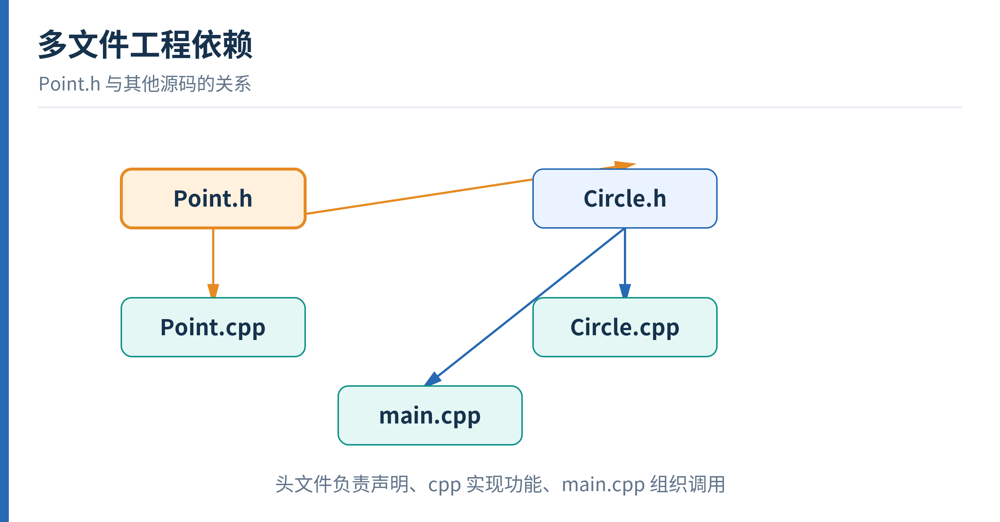
头文件负责声明、cpp 实现功能、main.cpp 组织调用
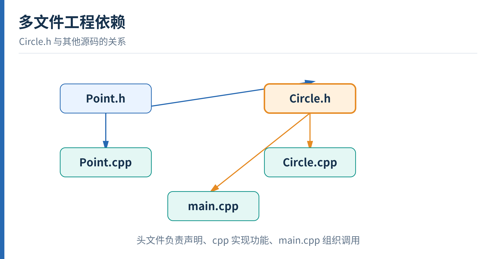
头文件负责声明、cpp 实现功能、main.cpp 组织调用
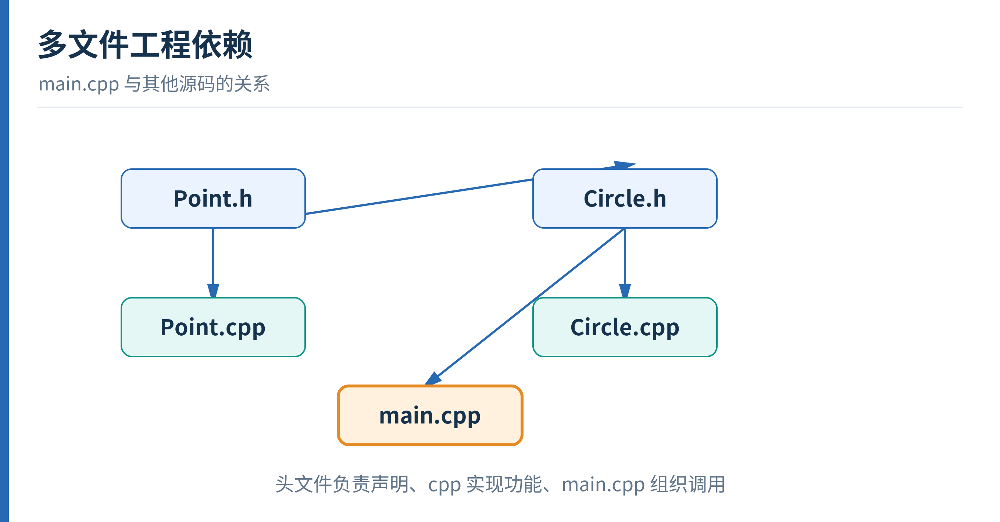
头文件负责声明、cpp 实现功能、main.cpp 组织调用
7.2.3 复数类与有名复数类
课件的第二个案例是 CComplex（保存实部、虚部）与 CNamedComplex（额外保存名称）。此例用来说明：
- 继承只处理共性部分。 实部、虚部、复数运算由基类承担。
- 派生类拥有自己的数据。
mpName指向名称字符数组（课件写法）。 - 派生类构造先初始化基类，再管理自己的名称资源。
- 派生类对基类重名
SetValues需注意名称隐藏，可使用CComplex::SetValues(r, i)。
图组：名字指针的分配、替换、释放全过程
适合学习阶段的安全改写：
#include <string> // 使用标准字符串
class CComplex {
protected:
double mR, mI; // 复数实部、虚部
public:
CComplex(double r, double i) : mR(r), mI(i) {} // 初始化复数值
void SetValues(double r, double i) { mR = r; mI = i; } // 修改复数值
};
class CNamedComplex : public CComplex { // 通过继承复用实部、虚部
std::string mName; // 自动管理字符内存
public:
CNamedComplex(const std::string& name, double r, double i)
: CComplex(r, i), mName(name) {} // 基类先于成员初始化
void SetValues(const std::string& name, double r, double i) {
mName = name; // 安全更新字符串
CComplex::SetValues(r, i); // 明确调用基类版本
}
};
7.2.4 继承与组合不能混淆
class Circle : public Point 是继承；class ChiefExecutive { Date date; }; 中的 Date 是成员对象（组合）。成员对象和基类对象都会参与构造过程，但不会因此变成同一种类型关系。
图组：继承关系、组合关系与层次变化
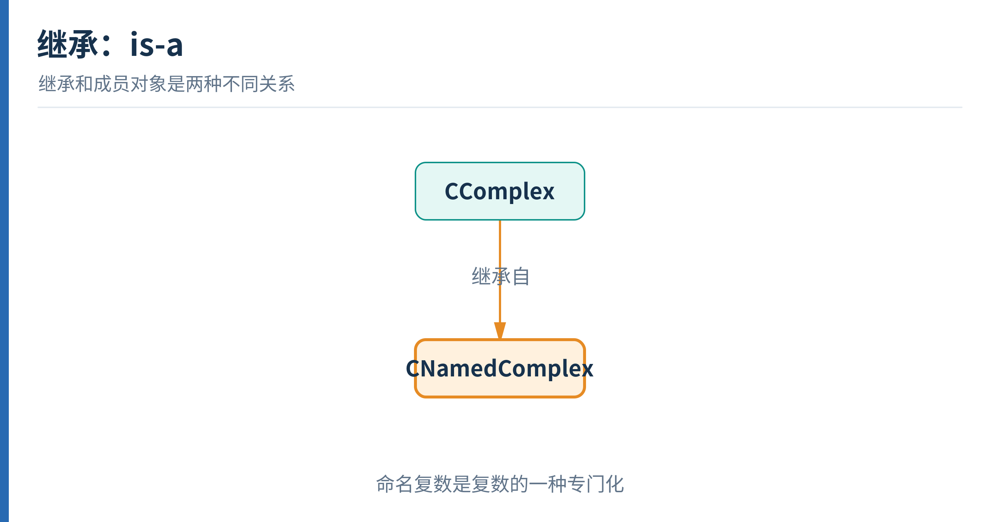
命名复数是复数的一种专门化
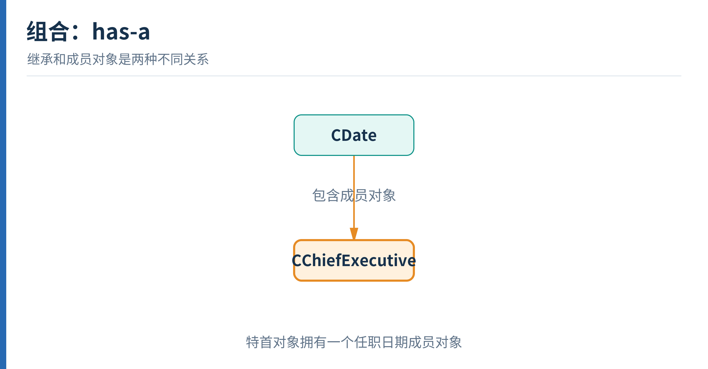
特首对象拥有一个任职日期成员对象
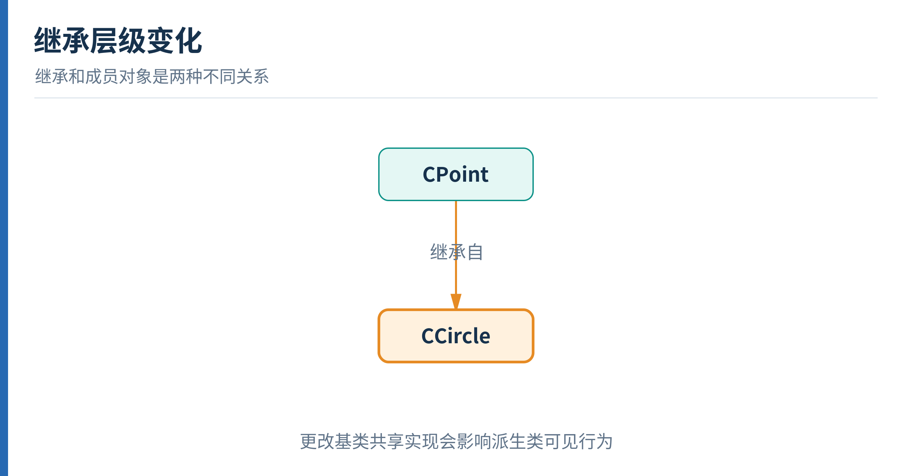
更改基类共享实现会影响派生类可见行为
7.2.5 同名函数与查找规则
派生类声明一个 SetValues(std::string, double, double)，并不自动与基类的 SetValues(double, double) 组成一个跨类重载集。名称查找先看派生类作用域；找到同名成员后通常隐藏基类同名声明。需要基类成员时可显式限定 Base::SetValues(...)；也可以在适用情况下使用 using Base::SetValues; 引入重载候选，但本讲以显式限定为主。
图组：名称隐藏与指定调用目标
7.3 派生类对基类成员的访问权
7.3.1 两套权限必须同时看
判断某个成员能否访问，要区分两件事：
- 成员在基类中原来是
public/protected/private哪一种。 - 派生时指定的是
public/protected/private继承哪一种；这还关系到最终从派生类外部观察的可访问级别。
直接派生类中，继承后的访问级别（课件核心表）：
| 基类原成员 | public 继承后 |
protected 继承后 |
private 继承后 |
|---|---|---|---|
public |
public |
protected |
private |
protected |
protected |
protected |
private |
private |
不可直接访问 | 不可直接访问 | 不可直接访问 |
“不可直接访问”不表示该数据已被删除。 基类自己的成员函数仍然可以按其权限操作自己的私有数据。派生类可以调用适当公开或保护的基类接口来间接完成操作。
图组：公有继承时三类基类成员
图组：保护继承时三类基类成员
图组：私有继承时三类基类成员
7.3.2 各类访问者的区别
- 基类自己的成员函数可访问基类全部成员。
- 派生类成员函数可访问合法继承路径下的
public、protected基类成员，但不能直接访问基类private。 - 普通使用者只能访问对象对外可见的
public接口；通过Derived对象访问时还受继承方式的限制。 - 友元关系必须明确授予，并非继承获得：
Derived的友元不会自动成为Base的友元；Base的友元可以访问适当的Base私有成员。
图组：派生类、外部使用者、友元以及更深层派生的访问差异
简短、可编译的权限示例：
class Base {
private:
int a = 1; // 仅 Base 及其友元可直接访问
protected:
int b = 2; // 派生类可在合法上下文中访问
public:
int c = 3; // 公有接口
};
class Derived : public Base { // 公有继承 Base
public:
void Change() {
b = 20; // 合法：访问保护成员
c = 30; // 合法：访问公有成员
// a = 10; // 非法：基类私有成员不可直接访问
}
};
7.4 定义惯例及赋值兼容原则
7.4.1 公有继承允许向上转换
课程给出的赋值兼容原则：public 派生类对象可以在需要基类对象、基类引用或基类指针的场合使用。这里的三种使用方式行为不完全相同：
Base& r = derived;：引用绑定已有派生对象的基类子对象，不复制。Base* p = &derived;：指向该基类子对象，不复制。Base b = derived;或b = derived;：按值复制基类部分，派生类新增的数据没有进入b，称为对象切片（slicing）。
图组：赋值兼容与通过不同类型表达式调用 Show
图组：复制切片前后与指针/引用所指位置
源对象仍含有半径
zPoint = zCircle 不会把 mR 复制到 zPoint
向上转换没有销毁派生部分
静态类型限定可见接口
例题：课件 zPoint = zCircle 与 rPoint.Show() 的结果
CCircle circle(9, 9, 9); // 派生对象：圆心(9,9)、半径9
CPoint point(7, 1); // 独立基类对象
CPoint& rPoint = circle; // 引用绑定基类子对象，无复制
CPoint* pPoint = &circle; // 指针指向基类子对象，无复制
point = circle; // 只复制 CPoint 基类部分
rPoint.Show(); // 调用非虚 CPoint::Show
pPoint->Show(); // 调用非虚 CPoint::Show
point.Show(); // 坐标已变为(9,9)
这段是依赖前面 CPoint/CCircle 声明的代码片段，不独立定义 main。Show() 非虚函数，故通过基类类型的引用/指针调用时依然选择 CPoint::Show()。如果换成满足动态绑定条件的虚函数，才会出现不同结果；那是第八讲内容。
7.4.2 不能把反向转换看成理所当然
从 Derived 到公开且无歧义的 Base 可以自动转换；反过来从普通 Base 到 Derived 不能自动进行，因为基类对象不一定包含派生类额外部分。private/protected 继承也会影响在普通外部代码中能否发生此类隐式转换；普通非虚菱形继承甚至可能使通往共同基类的转换产生歧义。
图组：不合法、受限或不安全的转换
7.5 构造函数定义及执行准则
7.5.1 最重要的顺序规则
一个派生类完整对象的构造顺序：
- **虚基类（如有）**按语言规定的虚基类次序初始化（详见 7.6）；
- 直接非虚基类子对象按基类说明列表中的声明次序；
- 非静态成员对象按其在类内的声明次序；
- 派生类构造函数体最后执行。
析构顺序完全相反（先执行派生类析构函数体，再销毁成员对象及基类子对象）。构造函数初始化列表的排列顺序，不会改变上述真正执行顺序。
课件中的 CCircle(int x,int y,int r) : CPoint(x,y)，意味着 调用基类构造函数准备好圆心，然后才执行派生类构造函数体并处理半径。
图组：圆对象构造的三步执行
基类子对象必须先初始化
基类子对象必须先初始化
基类子对象必须先初始化
图组：圆对象析构的三步执行
对象的销毁次序与构造相反
对象的销毁次序与构造相反
对象的销毁次序与构造相反
7.5.2 人、日期与特首例程
课件的三个类可以用下列逻辑关系理解：
CPerson是基类，保存姓名。CDate是成员对象的类，保存年、月、日。CChiefExecutive : public CPerson是派生类，包含一个CDate mWorkDate。
定义 CChiefExecutive(name, y, m, d) 时，构造次序 Person → Date → ChiefExecutive；对象离开作用域时逆序 ChiefExecutive → Date → Person。这并非代码“先显示了哪句话就先构造了谁”，而是语言规定了子对象建立的顺序。
可运行的精简例程：
#include <iostream> // 使用控制台输出
#include <string> // 安全存储姓名
class CPerson {
std::string mName; // 使用自动管理内存的字符串
public:
explicit CPerson(const std::string& name) : mName(name) {
std::cout << "Person...\n"; // 先构造基类
}
~CPerson() { std::cout << "Delete Person!\n"; } // 最后析构基类
};
class CDate {
int mYear, mMonth, mDay; // 保存日期各部分
public:
CDate(int y, int m, int d) : mYear(y), mMonth(m), mDay(d) {
std::cout << "Date...\n"; // 先于派生类自身构造函数体
}
~CDate() { std::cout << "Delete Date!\n"; } // 晚于派生类自身析构
};
class CChiefExecutive : public CPerson { // CPerson 是基类
CDate mWorkDate; // CDate 是成员对象
public:
CChiefExecutive(const std::string& name, int y, int m, int d)
: CPerson(name), mWorkDate(y, m, d) { // 初始化基类和成员
std::cout << "ChiefExecutive...\n"; // 最后执行派生类函数体
}
~CChiefExecutive() {
std::cout << "Delete ChiefExecutive!\n"; // 最先执行析构函数体
}
};
int main() {
CChiefExecutive ce("DJH", 1997, 7, 1); // 创建完整派生类对象
return 0; // 离开作用域后自动销毁
}
核对输出： Person... → Date... → ChiefExecutive... → Delete ChiefExecutive! → Delete Date! → Delete Person!。
图组：构造过程中哪些对象部分已存在
成员对象总在派生类构造函数体之前初始化
成员对象总在派生类构造函数体之前初始化
成员对象总在派生类构造函数体之前初始化
图组：析构过程中哪些对象部分正在销毁
成员和基类的析构由语言自动完成
成员和基类的析构由语言自动完成
成员和基类的析构由语言自动完成
7.5.3 初始化列表次序不是构造次序
如下代码中，虽然初始化列表先写 b(v) 后写 a(v)，只要类体内的数据成员声明顺序是 a、b，仍然先初始化 a，再初始化 b。若 b 的初始化表达式依赖 a，必须考虑此实际顺序；建议让初始化列表顺序与声明顺序一致，提高可读性。
class Pair {
int a; // 成员 a 先声明
int b; // 成员 b 后声明
public:
explicit Pair(int v) : b(v + 1), a(v) {} // 实际先初始化 a，再初始化 b
};
图组：初始化列表顺序的误区
图组：基类与成员的真实初始化顺序、特殊成员要求
图组：把完整构造和析构过程串成时间线
7.6 多重继承与虚基类
7.6.1 多重继承的两个不同问题
多重继承： 一个类可以同时从多个基类继承，例如 CBat : public CBird, public CBeast。本讲最重要的是区分：
- 成员名称歧义：
CBird和CBeast都有ShowBodyFeature()，CBat若不自己给出明确接口，直接写bat.ShowBodyFeature()可能歧义。 - 重复祖先子对象：如果
CBird、CBeast又都继承同一个CAnimal，最派生CBat里可能有两份CAnimal基类子对象，导致重复与转换歧义。
前者可以通过 bat.CBird::ShowBodyFeature() 或 bat.CBeast::ShowBodyFeature() 明确指定；后者需要了解虚继承来共享公共祖先。虚继承不会自动解决两个兄弟基类中同名成员函数的名称查找歧义。
图组：同名函数、共同基类转换与消歧
同名成员消歧的最小示例：
#include <iostream> // 输出演示结果
class CBird {
public:
void ShowBodyFeature() const { std::cout << "Bird\n"; } // 鸟的特征
};
class CBeast {
public:
void ShowBodyFeature() const { std::cout << "Beast\n"; } // 兽的特征
};
class CBat : public CBird, public CBeast { // 多重继承
};
int main() {
CBat bat; // 创建多重派生对象
bat.CBird::ShowBodyFeature(); // 显式选择 CBird 的函数
bat.CBeast::ShowBodyFeature(); // 显式选择 CBeast 的函数
return 0; // 输出 Bird 与 Beast
}
7.6.2 菱形继承：为何会重复 CAnimal
普通菱形结构：
CAnimal → CBird → CBat 与 CAnimal → CBeast → CBat。如果中间两条边只是普通继承，则两条路径带来两个不同的 CAnimal 基类子对象。这些子对象虽然类型相同，却位于不同继承路径，并不会因为名字相同自动合并。
图组：普通菱形中两条不同的继承路径
图：普通菱形在完整对象中的重复基类子对象
虚继承解决重复基类子对象问题
7.6.3 虚继承：共享一个虚基类子对象
在 CBird、CBeast 的直接继承声明中写 virtual public CAnimal：
class CAnimal {}; // 公共祖先
class CBird : virtual public CAnimal {}; // 虚继承 CAnimal
class CBeast : virtual public CAnimal {}; // 也虚继承 CAnimal
class CBat : public CBird, public CBeast {}; // 最派生类仅含一份共享 CAnimal
图组：引入虚基类后，同一个 Animal 被多个路径共享
图：虚基类让最终对象只保留一份共享祖先
虚继承解决重复基类子对象问题
7.6.4 虚基类构造：由最派生类负责
普通规则升级：最派生类负责初始化它的虚基类。 即使中间层 CBird()、CBeast() 的初始化列表也写了 CAnimal(...)，当你正在构造的是完整的 CBat 对象时，它们对共享虚基类的初始化说明会被忽略，统一由最派生类 CBat 初始化。
课件中的 CBat : public CBird, public CBeast，实际构造先后是：
CAnimal（虚）→ CBird → CBeast → CBat。
其析构反向：CBat → CBeast → CBird → CAnimal。课件第 55—58 页的示例故意在初始化列表中写出 CBeast() 和 CBird() 的不同顺序，目的正是提醒：不能根据初始化列表的书写顺序判断实际构造次序。
图组：共享虚基类构造的四步状态
构造先后：CAnimal → CBird → CBeast → CBat
构造先后：CAnimal → CBird → CBeast → CBat
构造先后：CAnimal → CBird → CBeast → CBat
构造先后：CAnimal → CBird → CBeast → CBat
图组：共享虚基类析构的四步状态
析构先后：CBat → CBeast → CBird → CAnimal
析构先后：CBat → CBeast → CBird → CAnimal
析构先后：CBat → CBeast → CBird → CAnimal
析构先后：CBat → CBeast → CBird → CAnimal
标准 C++17：虚基类带参构造的可编译例子
#include <iostream> // 观察构造先后
class CAnimal {
int mTag; // 虚基类保存共同数据
public:
explicit CAnimal(int tag) : mTag(tag) {
std::cout << "Animal(" << mTag << ")\n"; // 输出被选中的实参
}
int GetTag() const { return mTag; } // 提供读取接口
};
class CBird : virtual public CAnimal { // 声明共享虚基类
public:
CBird() : CAnimal(1) { std::cout << "Bird\n"; } // 单独构造 Bird 时用 1
};
class CBeast : virtual public CAnimal { // 同样共享虚基类
public:
CBeast() : CAnimal(2) { std::cout << "Beast\n"; } // 单独构造 Beast 时用 2
};
class CBat : public CBird, public CBeast { // Bird 在继承列表中排在 Beast 前
public:
CBat() : CAnimal(99), CBeast(), CBird() { // 实际顺序不由这里排列决定
std::cout << "Bat\n"; // 在全部基类初始化后执行
}
};
int main() {
CBat bat; // 创建最派生对象
std::cout << bat.GetTag() << '\n'; // 从共享的 Animal 读取标签 99
return 0; // 对象自动销毁
}
预期输出： Animal(99) → Bird → Beast → Bat → 99。CAnimal(1) 与 CAnimal(2) 在构造 CBat 时不负责初始化共享的 CAnimal。
7.6.5 多层次、多虚基类时怎么看顺序
更复杂的类层次需要分清虚基类和非虚基类：
- 先处理完整对象中的全部虚基类：按标准规定的深度优先、从左至右的首次遇见顺序；同一虚基类只初始化一次。
- 再初始化直接非虚基类，按最派生类基类说明列表顺序。
- 再初始化成员对象，按声明次序。
- 最后执行最派生类构造函数体。
课件第 60—65 页给出连续的类层次图，比较虚基类与普通基类的不同组合。这里通过图示拆解原则；实际复杂题应先画出类层次，再按虚基类首次出现顺序排出清单，最后排非虚基类和成员。
图组：一般多继承、声明顺序、最派生类角色
图组：不同多重继承关系的初始化／销毁顺序
图组：多重继承三类高频误区
课程小结与练习（PPT 第 67—70 页）
核心区分速查
| 容易混淆的两者 | 关键区别 |
|---|---|
| 继承 / 组合 | is-a 类间接口关系 / has-a 成员对象关系 |
private 成员 / private 继承 |
前者是成员级权限，后者是继承方式 |
| 函数隐藏 / 虚函数重写 | 同名查找与可见性 / 必须依靠 virtual 语义与匹配的函数声明 |
| 基类引用 / 基类对象复制 | 引用不复制；按值复制会对象切片 |
| 构造列表顺序 / 构造执行顺序 | 真实顺序由虚基类、基类列表、成员声明决定 |
| 普通菱形 / 虚菱形 | 共同祖先两份 / 共享一份虚基类子对象 |
| 虚基类 / 虚函数 | 继承子对象共享与初始化 / 动态绑定（下讲重点） |
练习 1：追踪完整对象的构造与析构
Derived : public Base 同时拥有成员 Member date，假设无虚基类，声明顺序为 Base 后 date，输出先后应为：
Base() → Member() → Derived() → ~Derived() → ~Member() → ~Base()。
检查点： 无论初始化列表写成 date(...), Base(...) 还是 Base(...), date(...)，真实子对象执行顺序不变。
练习 2：判断 Show() 的调用目标
CPoint& r = circle; // 引用静态类型为 CPoint
r.Show(); // 本讲例程调用 CPoint::Show
circle.Show(); // 调用 CCircle::Show
circle.CPoint::Show(); // 明确选择 CPoint::Show
结论： 本讲的 Show() 是非虚函数，不能根据实际对象是 CCircle 就认定 r.Show() 会动态调用派生类版本。
练习 3：圆与圆柱体的面积、体积（课件第 69 页作业）
设计 Circle 与 Cylinder：
Circle保存半径radius，提供Area()计算。 Cylinder : public Circle增加height，提供Volume()计算，也可提供总表面积 。 - 通过构造函数初始化列表让
Cylinder调用Circle构造函数，检验继承结构与计算结果。
阅读课件与实践时的五项校订
- 标准入口：
int main()，不是旧课件的void main()。 - 保护数据： 课件倾向基类数据
protected，实际工程常优先private加受控接口；不是一律必须protected。 - 动态内存： 原始
char*不等于安全的现代复制语义，优先std::string和资源自动管理。 - 虚基类： 不禁止带参数构造；关键是由最派生类初始化。
- 析构安全： 若未来要通过基类指针删除派生对象，基类析构函数通常应当为
virtual；本讲直接局部对象不涉及这类删除。
整理基于所上传 72 页课件；图解均为本次重新绘制，没有直接截取 PPT 图像。编译验证的 C++17 测试源码与检查记录随 ZIP 附带。